image_files = glob.glob('../input/data/data/*.png')
shuffle(image_files)Deep Convolutional AnimeGAN
computervision
deeplearning
keras
python
tensorflow
Generating Anime Faces using Deep Convolutional GAN
Project Repository: https://github.com/soumik12345/Adventures-with-GANS
::: {#cell-2 .cell _cell_guid=‘b1076dfc-b9ad-4769-8c92-a6c4dae69d19’ _uuid=‘8f2839f25d086af736a60e9eeb907d3b93b6e0e5’ execution_count=1}
import os, warnings
warnings.filterwarnings('ignore'):::
::: {#cell-3 .cell _cell_guid=‘79c7e3d0-c299-4dcb-8224-4455121ee9b0’ _uuid=‘d629ff2d2480ee46fbb7e2d37f6b5fab8052498a’ execution_count=2}
import numpy as np
import cv2, glob
from random import shuffle, randint
from tqdm import tqdm
import matplotlib.pyplot as plt
from tensorflow.keras.preprocessing.image import ImageDataGenerator
from tensorflow.keras.models import Sequential
from tensorflow.keras.layers import Dense, Flatten, Reshape, BatchNormalization
from tensorflow.keras.layers import Activation, Conv2DTranspose, Conv2D, LeakyReLU
from tensorflow.keras.optimizers import Adam
from keras.utils.vis_utils import model_to_dot
from IPython.display import SVG:::
x = []
for file in tqdm(image_files):
image = cv2.imread(file)
image = image / 127.5
image = image - 1
x.append(image)
x = np.array(x)
x.shape(21551, 64, 64, 3)fig, axes = plt.subplots(nrows = 4, ncols = 4, figsize = (16, 16))
plt.setp(axes.flat, xticks = [], yticks = [])
for i, ax in enumerate(axes.flat):
index = randint(0, 10000)
ax.imshow(x[index], cmap = 'gray')
plt.show()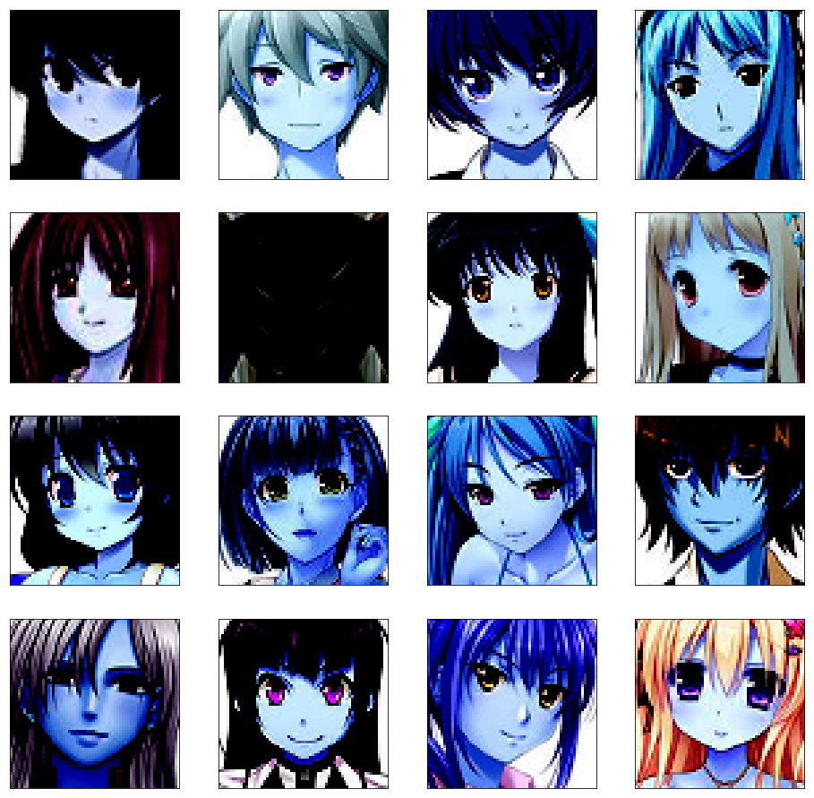
def build_discriminator(image_shape, learning_rate, beta_1):
discriminator = Sequential([
Conv2D(
filters = 64,
kernel_size = (5, 5),
strides = (2, 2),
padding = 'same',
data_format = 'channels_last',
kernel_initializer = 'glorot_uniform',
input_shape = (image_shape)
),
LeakyReLU(0.2),
Conv2D(
filters = 128,
kernel_size = (5, 5),
strides = (2, 2),
padding = 'same',
data_format = 'channels_last',
kernel_initializer = 'glorot_uniform',
),
BatchNormalization(momentum = 0.5),
LeakyReLU(0.2),
Conv2D(
filters = 256,
kernel_size = (5, 5),
strides = (2, 2),
padding = 'same',
data_format = 'channels_last',
kernel_initializer = 'glorot_uniform',
),
BatchNormalization(momentum = 0.5),
LeakyReLU(0.2),
Conv2D(
filters = 512,
kernel_size = (5, 5),
strides = (2, 2),
padding = 'same',
data_format = 'channels_last',
kernel_initializer = 'glorot_uniform',
),
BatchNormalization(momentum = 0.5),
LeakyReLU(0.2),
Flatten(),
Dense(1),
Activation('sigmoid')
], name = 'Discriminator')
discriminator.compile(
loss = 'binary_crossentropy',
optimizer = Adam(
lr = learning_rate,
beta_1 = beta_1
),
metrics = None
)
return discriminatordef build_generator(input_shape, learning_rate, beta_1):
generator = Sequential([
Dense(
input_shape,
kernel_initializer = 'glorot_uniform',
input_shape = (1, 1, 100)
),
Reshape(target_shape = (4, 4, 512)),
BatchNormalization(momentum = 0.5),
Activation('relu'),
Conv2DTranspose(
filters = 256,
kernel_size = (5, 5),
strides = (2, 2),
padding = 'same',
data_format = 'channels_last',
kernel_initializer = 'glorot_uniform'
),
BatchNormalization(momentum = 0.5),
Activation('relu'),
Conv2DTranspose(
filters = 128,
kernel_size = (5, 5),
strides = (2, 2),
padding = 'same',
data_format = 'channels_last',
kernel_initializer = 'glorot_uniform'
),
BatchNormalization(momentum = 0.5),
Activation('relu'),
Conv2DTranspose(
filters = 64,
kernel_size = (5, 5),
strides = (2, 2),
padding = 'same',
data_format = 'channels_last',
kernel_initializer = 'glorot_uniform'
),
BatchNormalization(momentum = 0.5),
Activation('relu'),
Conv2DTranspose(
filters = 3,
kernel_size = (5, 5),
strides = (2, 2),
padding = 'same',
data_format = 'channels_last',
kernel_initializer = 'glorot_uniform'
),
Activation('tanh'),
], name = 'Generator')
generator.compile(
loss = 'binary_crossentropy',
optimizer = Adam(
lr = learning_rate,
beta_1 = beta_1
),
metrics = None
)
return generatordef build_gan(generator, discriminator, learning_rate, beta_1):
gan = Sequential([
generator,
discriminator
], name = 'GAN')
gan.compile(
loss = 'binary_crossentropy',
optimizer = Adam(
lr = learning_rate,
beta_1 = beta_1
),
metrics = None
)
return gandiscriminator = build_discriminator((64, 64, 3), 0.0002, 0.5)
discriminator.summary()WARNING:tensorflow:From /opt/conda/lib/python3.6/site-packages/tensorflow/python/ops/resource_variable_ops.py:435: colocate_with (from tensorflow.python.framework.ops) is deprecated and will be removed in a future version.
Instructions for updating:
Colocations handled automatically by placer.
_________________________________________________________________
Layer (type) Output Shape Param #
=================================================================
conv2d (Conv2D) (None, 32, 32, 64) 4864
_________________________________________________________________
leaky_re_lu (LeakyReLU) (None, 32, 32, 64) 0
_________________________________________________________________
conv2d_1 (Conv2D) (None, 16, 16, 128) 204928
_________________________________________________________________
batch_normalization_v1 (Batc (None, 16, 16, 128) 512
_________________________________________________________________
leaky_re_lu_1 (LeakyReLU) (None, 16, 16, 128) 0
_________________________________________________________________
conv2d_2 (Conv2D) (None, 8, 8, 256) 819456
_________________________________________________________________
batch_normalization_v1_1 (Ba (None, 8, 8, 256) 1024
_________________________________________________________________
leaky_re_lu_2 (LeakyReLU) (None, 8, 8, 256) 0
_________________________________________________________________
conv2d_3 (Conv2D) (None, 4, 4, 512) 3277312
_________________________________________________________________
batch_normalization_v1_2 (Ba (None, 4, 4, 512) 2048
_________________________________________________________________
leaky_re_lu_3 (LeakyReLU) (None, 4, 4, 512) 0
_________________________________________________________________
flatten (Flatten) (None, 8192) 0
_________________________________________________________________
dense (Dense) (None, 1) 8193
_________________________________________________________________
activation (Activation) (None, 1) 0
=================================================================
Total params: 4,318,337
Trainable params: 4,316,545
Non-trainable params: 1,792
_________________________________________________________________SVG(model_to_dot(discriminator, show_shapes = True, show_layer_names = True).create(prog = 'dot', format = 'svg'))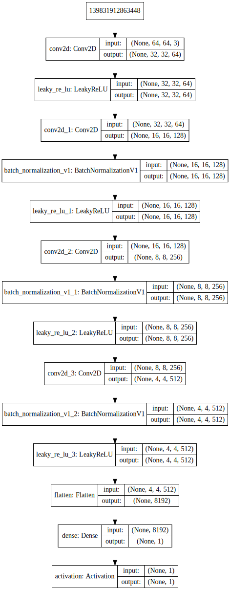
generator = build_generator(np.prod(discriminator.layers[-4].output_shape[1:]), 0.00015, 0.5)
generator.summary()_________________________________________________________________
Layer (type) Output Shape Param #
=================================================================
dense_1 (Dense) (None, 1, 1, 8192) 827392
_________________________________________________________________
reshape (Reshape) (None, 4, 4, 512) 0
_________________________________________________________________
batch_normalization_v1_3 (Ba (None, 4, 4, 512) 2048
_________________________________________________________________
activation_1 (Activation) (None, 4, 4, 512) 0
_________________________________________________________________
conv2d_transpose (Conv2DTran (None, 8, 8, 256) 3277056
_________________________________________________________________
batch_normalization_v1_4 (Ba (None, 8, 8, 256) 1024
_________________________________________________________________
activation_2 (Activation) (None, 8, 8, 256) 0
_________________________________________________________________
conv2d_transpose_1 (Conv2DTr (None, 16, 16, 128) 819328
_________________________________________________________________
batch_normalization_v1_5 (Ba (None, 16, 16, 128) 512
_________________________________________________________________
activation_3 (Activation) (None, 16, 16, 128) 0
_________________________________________________________________
conv2d_transpose_2 (Conv2DTr (None, 32, 32, 64) 204864
_________________________________________________________________
batch_normalization_v1_6 (Ba (None, 32, 32, 64) 256
_________________________________________________________________
activation_4 (Activation) (None, 32, 32, 64) 0
_________________________________________________________________
conv2d_transpose_3 (Conv2DTr (None, 64, 64, 3) 4803
_________________________________________________________________
activation_5 (Activation) (None, 64, 64, 3) 0
=================================================================
Total params: 5,137,283
Trainable params: 5,135,363
Non-trainable params: 1,920
_________________________________________________________________SVG(model_to_dot(generator, show_shapes = True, show_layer_names = True).create(prog = 'dot', format = 'svg'))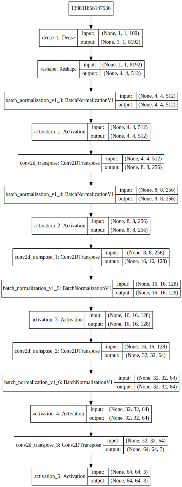
discriminator.trainable = False
gan = build_gan(generator, discriminator, 0.00015, 0.5)
gan.summary()_________________________________________________________________
Layer (type) Output Shape Param #
=================================================================
Generator (Sequential) (None, 64, 64, 3) 5137283
_________________________________________________________________
Discriminator (Sequential) (None, 1) 4318337
=================================================================
Total params: 9,455,620
Trainable params: 5,135,363
Non-trainable params: 4,320,257
_________________________________________________________________SVG(model_to_dot(gan, show_shapes = True, show_layer_names = True).create(prog = 'dot', format = 'svg'))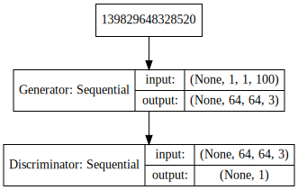
EPOCHS = 15000
BATCH_SIZE = 32def plot_images(nrows, ncols, figsize, generator):
noise = np.random.normal(0, 1, size = (BATCH_SIZE * 2, ) + (1, 1, 100))
prediction = generator.predict(noise)
fig, axes = plt.subplots(nrows = nrows, ncols = ncols, figsize = figsize)
plt.setp(axes.flat, xticks = [], yticks = [])
for i, ax in enumerate(axes.flat):
index = randint(0, 63)
ax.imshow(cv2.cvtColor(prediction[index], cv2.COLOR_BGR2RGB), cmap = 'gray')
plt.show()discriminator_loss_history, generator_loss_history = [], []
for epoch in tqdm(range(1, EPOCHS + 1)):
# Select a random batch of images from training data
index = np.random.randint(0, x.shape[0], BATCH_SIZE)
batch_images = x[index]
# Adversarial Noise
noise = np.random.normal(0, 1, size = (BATCH_SIZE, ) + (1, 1, 100))
# Fenerate Fake Images
generated_images = generator.predict(noise)
# Adding noise to the labels before passing to the discriminator
real_y = (np.ones(BATCH_SIZE) - np.random.random_sample(BATCH_SIZE) * 0.2)
fake_y = np.random.random_sample(BATCH_SIZE) * 0.2
# Training the discriminator
discriminator.trainable = True
discriminator_loss = discriminator.train_on_batch(batch_images, real_y)
discriminator_loss += discriminator.train_on_batch(generated_images, fake_y)
discriminator.trainable = False
# Adversarial Noise
noise = np.random.normal(0, 1, size = (BATCH_SIZE * 2,) + (1, 1, 100))
# We try to mislead the discriminator by giving the opposite labels
fake_y = (np.ones(BATCH_SIZE * 2) - np.random.random_sample(BATCH_SIZE * 2) * 0.2)
# Training the Generator
generator_loss = gan.train_on_batch(noise, fake_y)
if epoch % 100 == 0:
discriminator_loss_history.append(discriminator_loss)
generator_loss_history.append(generator_loss)
if epoch % 1000 == 0:
plot_images(2, 8, (16, 4), generator)WARNING:tensorflow:From /opt/conda/lib/python3.6/site-packages/tensorflow/python/ops/math_ops.py:3066: to_int32 (from tensorflow.python.ops.math_ops) is deprecated and will be removed in a future version.
Instructions for updating:
Use tf.cast instead.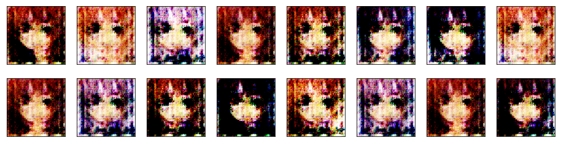
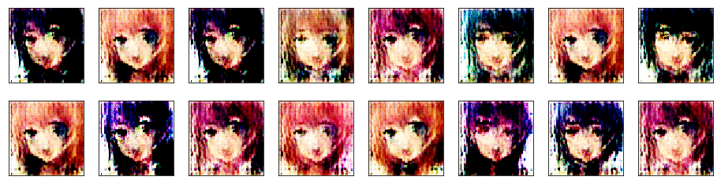
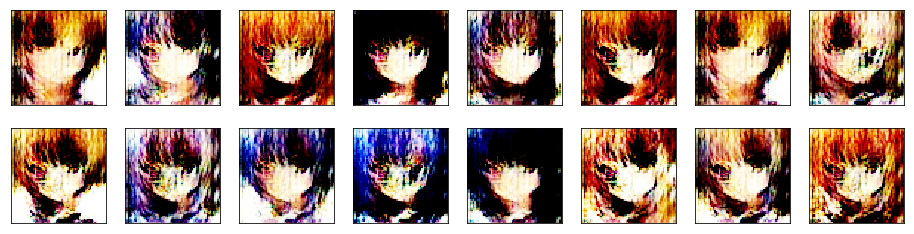
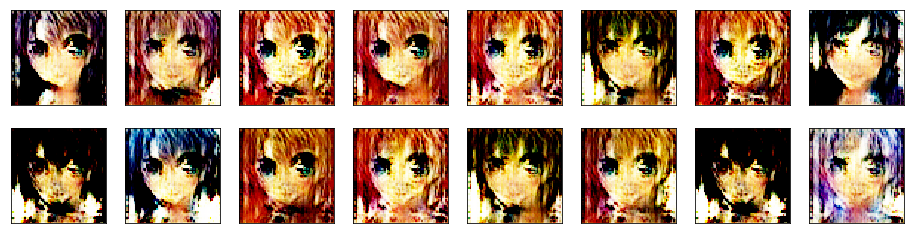
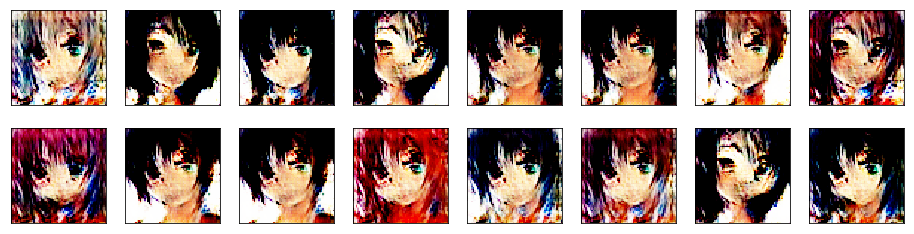
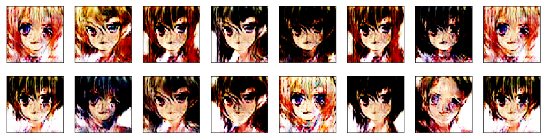
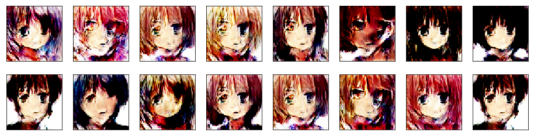
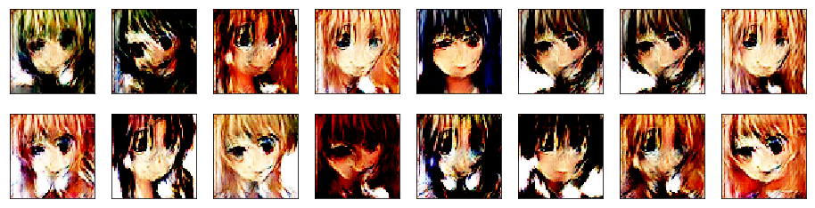
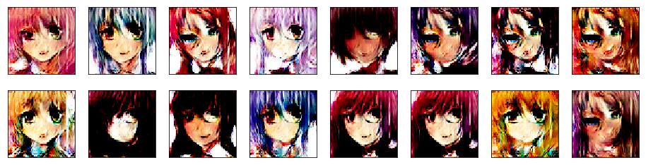
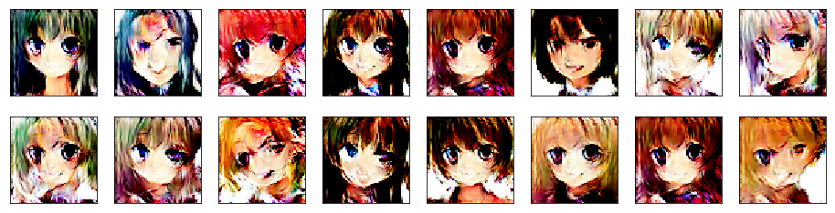
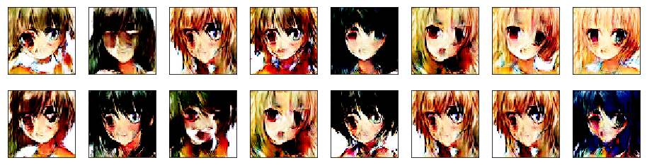
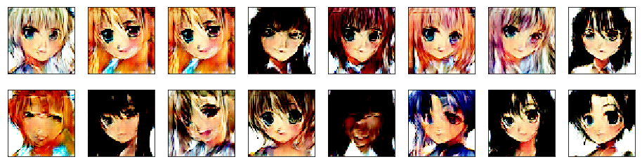
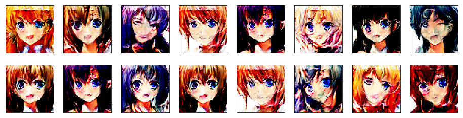
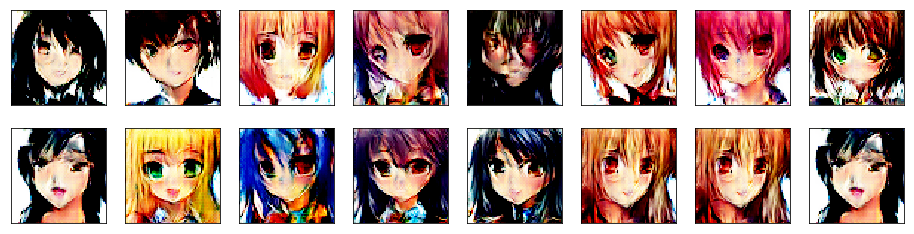
plt.figure(figsize = (20, 8))
plt.plot(generator_loss_history)
plt.title('Generator Loss History')
plt.show()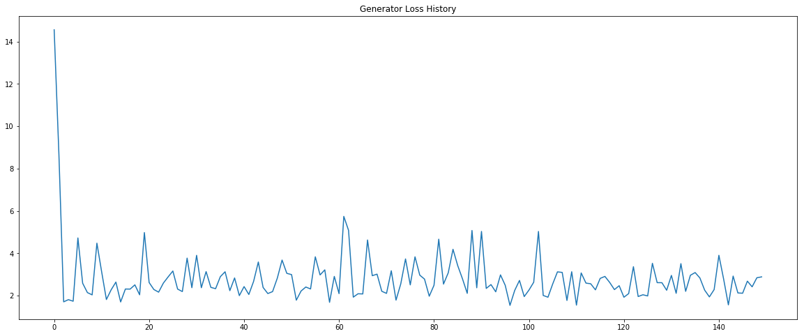
plt.figure(figsize = (20, 8))
plt.plot(discriminator_loss_history)
plt.title('Discriminator Loss History')
plt.show()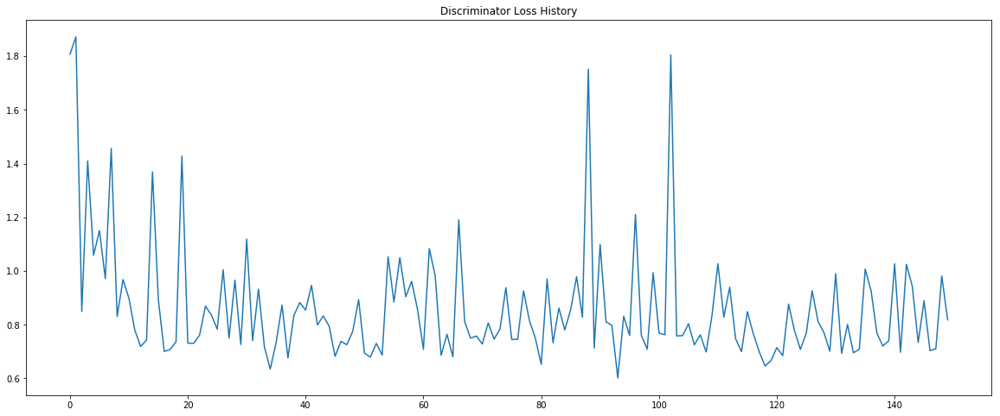
plot_images(4, 4, (16, 16), generator)
generator.save('./generator.h5')